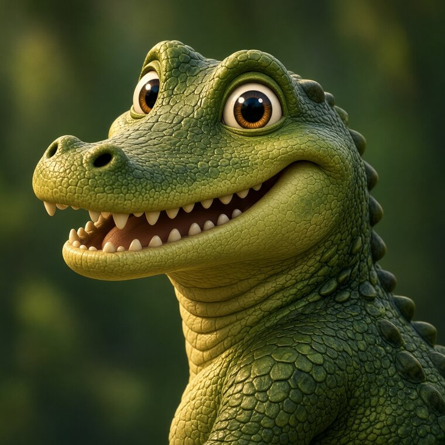
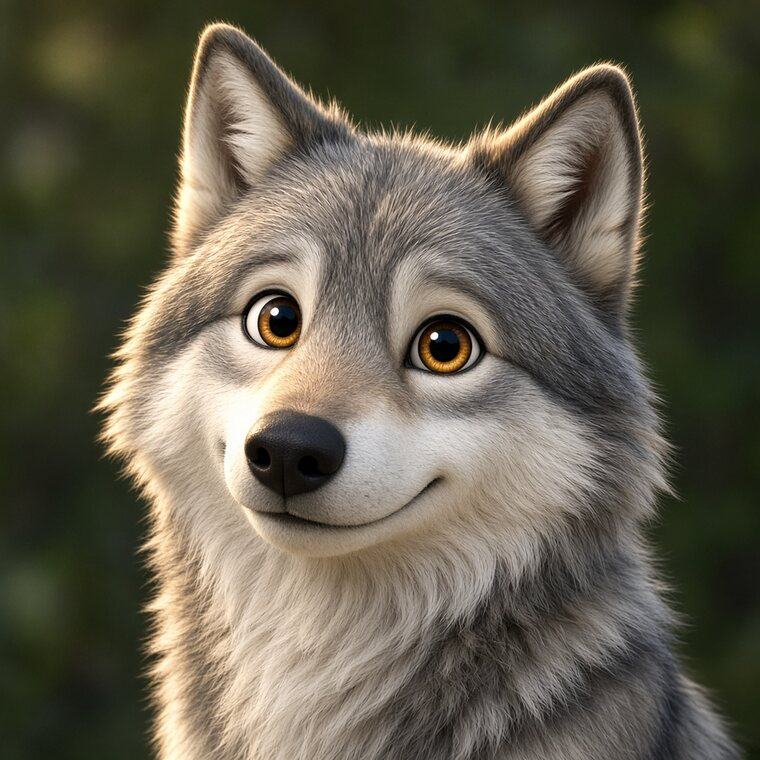

Все миссии, домашка и сертификат открыты сразу. Проходи в любом порядке. Прогресс сохраняется сам.
Секрет хорошего письма
Две привычки — и досье готово
Capital letters
Начало предложения и название страны — с большой буквы.
There are tigers in India.
Full stop
Одно предложение — одна точка в самом конце.
Tigers are big cats.
Шаблон fact file
This is a …
There are … in …
There aren't any … in …
… are …
They've got …
They can …
My own fact.
Example: This is a panda. There are pandas in China.
Mission 01 · The Tiger Files · 8–10 мин
Разоблачи фейки о тигре
Прочитай 7 записей. Если ошибка — нажми на слово, чтобы сделать букву большой, и добавь точку. Некоторые записи уже верные.
Посмотри на портрет и исправь досье. Нужны большая буква в начале, большая буква в названиях стран и точка в конце.
Mission 02 · The Crocodile Dossier · 10–12 мин
Собери досье крокодила
Выбери факт и вставь его в нужную строку. Лишние факты — ловушки. Чипсы перемешаны, порядок запоминается.

Какого цвета крокодил? Что у него есть? Где он живёт? Подсказка также есть в учебнике, p.17.
Proof-check
Какое предложение написано верно?
Досье запечатано
Mission 03 · Your Own Fact File · 12–15 мин
Создай свой animal fact file
Выбери одного из четырёх героев и напиши 7 предложений. В строках 2–6 выбери факт, затем нажми Aa и точку. Седьмое предложение напиши сам(а).
Homework · after the lesson · 15–20 минут
Закрепи animal fact file дома
Three tasks, different from classwork. You work as an archive editor: fix mistakes, write your own file and check facts.
01 · Fix the fact file
Read the wolf file. There are 6 sentences. Some capital letters and full stops are missing. Tap words and the dot to repair each sentence, then press Check.

Wolf · Canis lupus · 6 предложений, в некоторых пропали большие буквы и точки.
02 · Write your own mini fact file
Write 6 or more sentences about an animal you like. Do not copy a ready-made file. Use the structure: This is a… / There are… / There aren't any… / … are… / They've got… / They can… Start every sentence with a capital letter and end with a full stop.
03 · True or False + correct
Read each sentence. Choose True or False. If it is false, write a correct sentence (capital letter, full stop, at least 4 words).
Итог урока
Сертификат почти твой
Раздел открыт всегда. Именной сертификат появляется, когда собраны все три штампа миссий.
Правила под рукой
Можно открывать в любой момент. Каждое предложение: большая буква в начале, точка в конце.